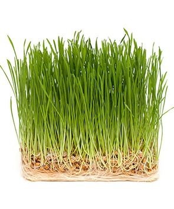

Realiza tu pedido en 3 Simples pasos
1.- Consulta la disponibilidad de cada producto en la página.
2.- Haz tu pedido por Whatsapp para garantizar disponibilidad.
3.- Recoje tu producto en uno de los negocios asociados a nuestra Red Comercial
Pasto de Trigo

$135.00 mxn .650g
El pasto de trigo, conocido por sus notables beneficios para la salud, es una fuente concentrada de nutrientes esenciales. Este superalimento verde proporciona vitaminas, minerales y enzimas que fortalecen el sistema inmunológico, favorecen la digestión y combaten la inflamación. Su alto contenido de clorofila contribuye a desintoxicar el cuerpo, mientras que sus propiedades alcalinas equilibran el pH. Además, el pasto de trigo es rico en antioxidantes que combaten el estrés oxidativo y promueven una piel radiante.
Integrar este poderoso ingrediente en la dieta diaria es una decisión inteligente para potenciar la vitalidad y el bienestar general.
Bolillo

$14.00 mxn .250g
El pan de trigo orgánico sin aditivos ofrece una experiencia gastronómica saludable y deliciosa. Este pan es elaborado con granos cultivados por nosotros con las mejores prácticas ecológicas y conservando la pureza de los ingredientes.
Libre de aditivos artificiales y químicos, garantiza una opción nutritiva para quienes buscan cuidar su salud. La riqueza en fibra promueve la digestión y la saciedad, mientras que los nutrientes esenciales fortalecen el sistema inmunológico. Su proceso de producción consciente respalda la Seguridad Alimentaria y preserva la calidad nutricional. Al elegir este pan de trigo orgánico, se apuesta por la salud, el bienestar y el respeto al medio ambiente.
Microgreens Girasol
$154.00 .100g
Vitaminas y Minerales: Los microgreens de girasol son una buena fuente de vitaminas y minerales esenciales, como la vitamina C, vitamina E, vitamina K, y varios minerales como el magnesio, el fósforo y el zinc.
Fibra: Contienen fibra dietética, lo que es beneficioso para la salud digestiva y puede ayudar a mantener niveles saludables de colesterol.
Antioxidantes: Los microgreens de girasol son ricos en antioxidantes, como los carotenoides y la clorofila, que ayudan a combatir el daño oxidativo en el cuerpo.
Ácidos Grasos Esenciales: Contienen ácidos grasos esenciales, como el ácido linoleico, que es beneficioso para la salud cardiovascular.
Proteínas: Los microgreens, incluidos los de girasol, son una buena fuente de proteínas, lo que los convierte en una opción interesante para quienes buscan aumentar su ingesta de proteínas de origen vegetal.
Betasitosterol: Los microgreens de girasol también contienen betasitosterol, un compuesto que puede tener propiedades antiinflamatorias y beneficios para la salud del corazón.
Microgreens Chicharo
Los microgreens de chícharo, también conocidos como guisantes germinados, son pequeños brotes jóvenes de las semillas de chícharo que se cosechan antes de que las plantas alcancen la etapa de plántula. Estos brotes son conocidos por su sabor fresco y sus posibles beneficios nutricionales. Aquí hay algunas propiedades nutricionales generales asociadas con los microgreens de chícharo:
Proteínas: Los microgreens de chícharo son una excelente fuente de proteínas, lo que los hace valiosos para aquellos que buscan aumentar su ingesta de proteínas de origen vegetal.
Vitaminas: Contienen varias vitaminas esenciales, incluyendo vitamina C, vitamina A, vitamina K y algunas del grupo B. La vitamina C es un antioxidante importante, mientras que la vitamina K es esencial para la coagulación sanguínea y la salud ósea.
Minerales: Los microgreens de chícharo pueden proporcionar minerales como el hierro, zinc y manganeso, que son esenciales para diversas funciones corporales.
Fibra: La presencia de fibra dietética en los microgreens de chícharo puede ser beneficiosa para la salud digestiva y contribuir a mantener niveles saludables de colesterol.
Ácido fólico: Los microgreens de chícharo son una buena fuente de ácido fólico (vitamina B9), que es esencial para el desarrollo adecuado del sistema nervioso y la formación de ADN.
Antioxidantes: Contienen compuestos antioxidantes que ayudan a combatir el daño causado por los radicales libres en el cuerpo.
Clorofila: Al igual que otros microgreens, los de chícharo contienen clorofila, que no solo contribuye al color verde característico, sino que también puede tener beneficios para la desintoxicación y la salud celular.
Bajas calorías: Los microgreens de chícharo suelen tener un bajo contenido calórico, lo que los convierte en una opción nutritiva para agregar a diversas comidas.
Microgreens Apio y Chicharo
Vitaminas: Contiene vitaminas A, C y K, que son esenciales para diversos aspectos de la salud. Antocianinas: La acelga roja puede contener antocianinas, compuestos antioxidantes responsables del color rojo y asociados con beneficios para la salud. Minerales: Al igual que otras variedades, proporciona minerales importantes.
Harina de Trigo Orgánica

Elaborar
© 2023 Verdecitos Organic Sustainable Food.
All Rights Reserved.